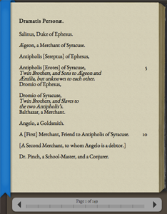

About
New Variorum Shakespeare Digital Challenge
This interface was created as an entry for the New Variorum Shakespeare Digital Challenge sponsored by the Modern Language Association. It should be viewed as a proof of concept of several features we would like to see in new digital editions. Notable features in this iteration are:
- Complete client-side web design (The interface is built entirely in HTML, JavaScript, and CSS and can run on any server environment capable of serving web pages)
- User-owned annotations using Google Fusion tables
- Dynamic and sharable media annotations using Google Spreadsheets
- Text/image-region linking (Images kindly provided by the Folger Shakespeare Library)
- Linking of place names to map image
If we had another month, we would have added:
- Dynamic connection between Google spreadsheets and Fusion Tables
- Conversion of all data files to Google Fusion tables (possible given approximately another week)
- Integration of the textual notes into the main text.
- Dynamic pagination of text (at present the text is pre-paginated and cached)
We hope you enjoy what you find here and share our excitement at the future possibilities this interface suggests.